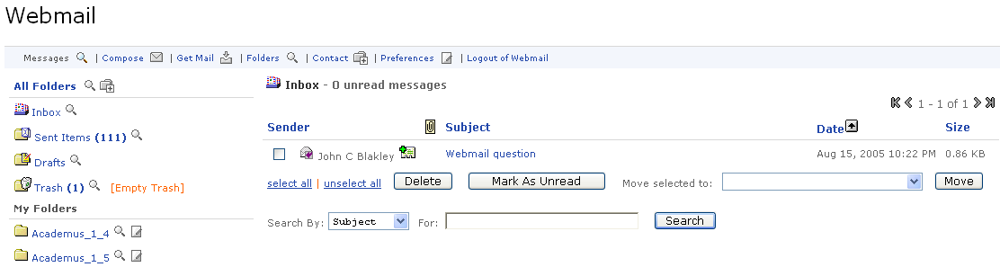

WebMail Channel
Looking for more help options? Click Here
Once you have been authenticated into the e-mail system, you will be given the following 6 options:
- View Messages
- Compose Mail
- Check for Mail
- Access Folders
- Add a Contact
- Modify Preferences

Read Mail
Selecting the Messages link will open your e-mail inbox. This view will show all of the current e-mail messages within your e-mail inbox, who sent the message, the subject, date sent, and its size.
Three icons may be present within the e-mail shown. A small letter icon indicates that the e-mail message has not been viewed. A rolodex icon allows you to add the sender to your personal address book. A paper clip icon indicates that the e-mail message has some form of attachment.
The user has 6 main actions from within this screen:
- Read an email message by clicking on the subject line of the e-mail
- Delete e-mail(s)
- Move an e-mail message to a folder
- Mark messages as unread
- Search for a message
- Navigate to additional pages of email messages
Viewing Mail --Once inside an e-mail message, you will see the typical pieces of information (To, From, CC, Subject, Date, and the message text). The message will include download links to any attachments added to the e-mail message as well. Finally, you will be given the option to "convert message to correct language." This option converts the message to a TXT-based format.
Additionally, you will have the option to Reply, Reply to All, Forward, Delete, Mark as Unread or file a message in a folder.
|
|
When you reply or reply to all, any attachments within the note will not be included. You will need to forward messages in order to preserve the attachment(s). |
Compose e-mail -- The compose e-mail view allows you to create an e-mail message. The following fields can be input: To, CC, BCC, Attachments, and Message text. You can add as many attachments to the message as needed. Remember that you are uploading and transmitting attachments across the internet. Extremely large files may have some trouble uploading in a timely manner.
Mail Preferences -- The following preferences are displayed and editable within this view:
- Number of emails to display per screen
- Number of folders to display per screen
- Sender Name to be displayed on outgoing messages
- Display full message headers - Yes/No
- Email signature
- Configure Email Filter(s) - Multiple filters are supported
- Retrieve mail from other mail accounts - Supports the configuration of multiple email accounts to be accessed via the webmail channel.
Following the update of any of your webmail preferences, click the Save and Exit button to save all modified preferences.
Check for new Mail -- The check for e-mail link simply refreshes the user view with any new e-mail messages found on the server.
Folders The Folder view allows the user to create, edit, and manipulate file folders. The system contains various default file folders (e.g., in-box, drafts, sent mail, trash). In addition, the user can setup a variety of other folders that can be used to categorize their e-mail messages. The folder view will display all of the folders and the number of read and unread messages they contain. By clicking on a folder, you will be brought into a focused folder view of the e-mail messages within that folder (similar to the in-box view). You can check the amount of space utilized within each folder by clicking the Check Folder Sizes link. This will open up an additional column that shows the size of each folder. You can add new folders by clicking the Add Folder button. The system will prompt you for the folder name. After entering this information, the new folder will be created and ready for use. You can rename any "user-created" folder by clicking the Edit icon within the folder row. Finally, you can delete folder(s) by selecting the check-box to the left of the folder name, and clicking the Delete button. By deleting a folder, you will delete the folder and all of its contents (other folders and e-mail messages). Deleted e-mail messages will appear under the "trash" folder until the Empty Trash link has been selected. |